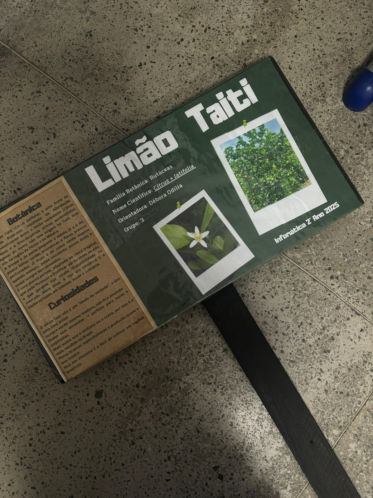
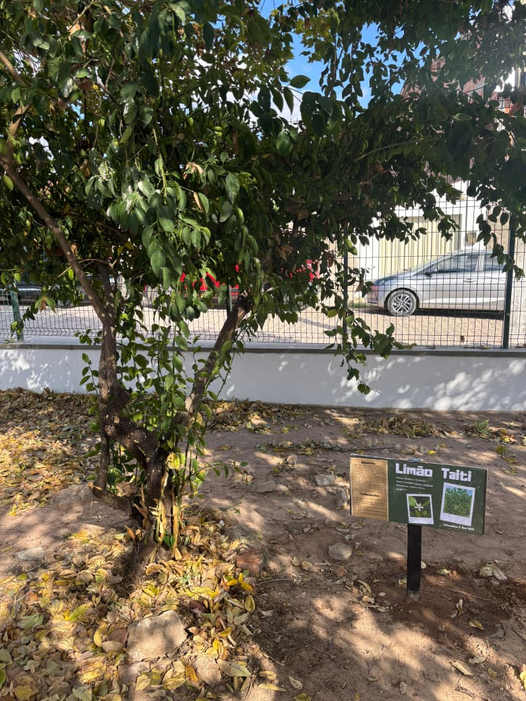

Características do Limão Tahiti
Aparência
O limão Tahiti possui formato oval alongado, com casca lisa e fina de coloração verde, que pode amadurecer para um amarelo-esverdeado. Seu tamanho varia entre 5 a 8 cm de diâmetro e 6 a 10 cm de comprimento.
Polpa e Sabor
Sua polpa é suculenta, de coloração verde-clara a amarela, com alto teor de suco (cerca de 50% do peso do fruto) e praticamente sem sementes. O sabor é ácido, refrescante e aromático.
Valor Nutricional
Rico em vitamina C, antioxidantes e minerais como potássio e cálcio. Cada 100g de limão Tahiti contém aproximadamente 29 calorias, 9g de carboidratos, 1g de proteína e 0,3g de lipídios.
Galeria da produção do trabalho



